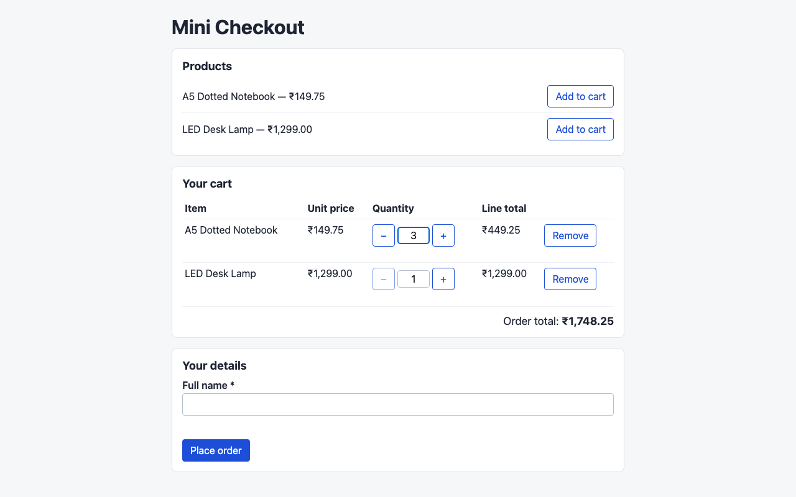
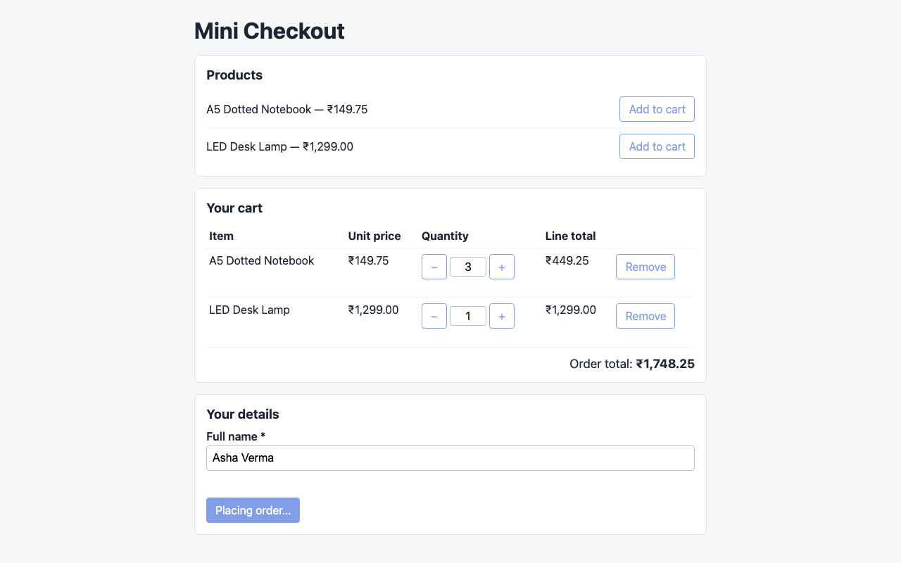
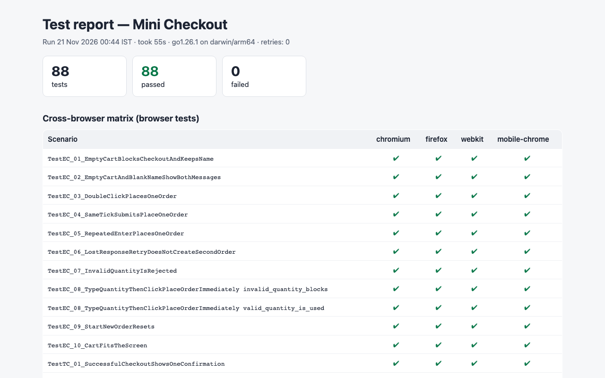

A checkout with a Go backend, tested in Chromium, Firefox, WebKit and on mobile.
Three real defects found and fixed. One flaky test investigated, not hidden.
Deliverables: checkout page · 3 automated checks · test plan · manual tests (empty cart, double-click) · defects with evidence
| Top risks (P1) | Why it matters |
|---|---|
| Duplicate order | Customer charged twice |
| Wrong amount | Charged a different total than shown |
| Invalid order accepted | Unfulfillable order |
| Click lost in some browsers | "Nothing happens", customer leaves |

3 × ₹149.75 = ₹449.25 exactly (float gives 449.2499…)-race)
| Level | What | Count |
|---|---|---|
| Unit (Go) | pricing, INR format, 10 validation rules, idempotency, HTTP codes | 28 |
| Browser (playwright-go) | 15 scenarios × 4 browser profiles | 60 |
| Manual | empty cart, rapid double-click + exploratory | 2+ |

HTML report generated from go test -json by cmd/testreport; CI runs each engine as its own job
| ID | What happened | Found by | Fix |
|---|---|---|---|
| DEF-01 | Typing 0 then clicking Place order placed the order while showing an error | Exploratory testing | Block checkout while any qty is invalid (client + server) |
| DEF-02 | After editing a qty, the first click was silently ignored in Firefox & WebKit. Chromium was fine | Cross-browser run | Update rows in place, no DOM rebuild mid-click; reserved error space |
| DEF-03 | On a 412 px phone the page was 509 px wide; Remove off-screen | Mobile profile | Stacked card layout under 560 px |
| FLAKE-01 | Intermittent Firefox failure: 2 in 39 runs | Repeat runs | Open. Logged and investigated; retries deliberately not added |
DEF-02 is why the suite runs on more than one engine: a Chrome-only suite was green the whole time.
| Injected bug | Caught by | Lesson |
|---|---|---|
| Remove the browser's submit guard | EC-04 | The server still deduplicated, but the test checks requests sent, so the regression is caught anyway |
| Server ignores idempotency keys | 4 unit tests + EC-06 | The second layer is genuinely tested, not just present |
| Browser stops checking the name | TC-02 ×2, EC-02 | Asserting "no request" catches what the server would silently cover |